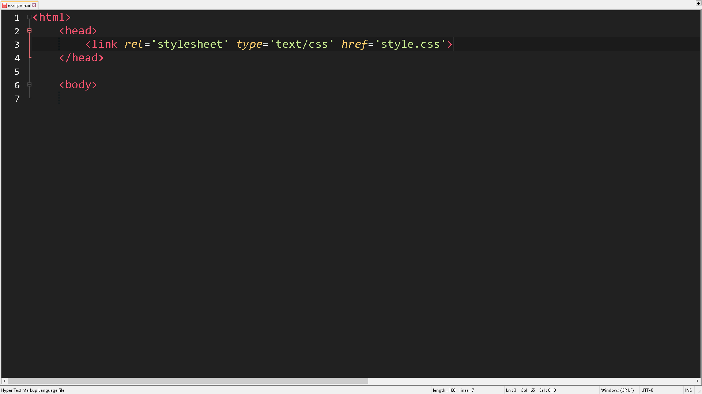

Now that you know some basics to HTML coding, why not add some really cool things to your webpage? Now that's what CSS is for. CSS stands "Cascading Style Sheet," which allows you to customize the look of different elements. The limits of CSS is almost infinite, and allows you to make your webpage look like the 90's or any theme you want!
| align-content | The align-content command sets how you want the content to be aligned on the webpage. The most common presets for the align-content include: center, left, and right. | |
| width | Chances are, you probably want to change the width of different things. You could change the width of images, YouTube videos, and even tables! When defining the size of an item, you have two options. You can either use percentage, which uses the original size as reference. Or you can use specific pixels, so you can code the webpage according to your specific size. | |
| margin | The margin command can really help your webpage look organized. Chances are, the default margins will mess up the layout of your webpage, so you can change the margins of elements. The best part? You can have different values for the top, left, right, and bottom! Wonderful! |
| Internal | Internal utilizes the <head> section of the document to set the style for the webpage. The pros of using this is that you can change your styles and set new styles within the same document, but the cons of using internal CSS is that it clutters up your HTML document. To some people, this can look real messy. | |
| External | External CSS means creating a seperate document called YOURFILENAME.css Pros of using external CSS is that it helps you seperate HTML and CSS so that you can see which one is which. It also creates less clutter when coding the webpage. However the cons of using external CSS is the fact that you have to switch back and forth a lot (Unless you're like me who uses the vertical split in Brackets) Another bad part is that some people may forget to link the CSS document to the HTML document, and people sometimes go crazy over this little mistake | |
| Inline | Inline CSS means changing the style of commands within the same brackets. Pros of using inline CSS is allowing you to change and see what you're setting each individual command. However, some cons of using inline includes cluttered workspace. But perhaps the biggest con of using inline is the fact that the style only applies to that single command. If there are multiple of the same command, you have to retype the style on each individual line. |
So now I'm going to show you how to use internal CSS. When using internal CSS, you want ot start by typing <style> command within the <head> section at the top of the HTML document. By doing this, you're essentially setting off a section of the document to setting style! Here is an example of internal CSS:

Using external CSS involves creating a seperate document, and saving it as a .css file. Perhaps the most important part of using an external CSS document is LINKING IT TO THE HTML DOCUMENT. I can tell you how many times I forgot to, and I spent even more time troubleshooting the issues. Linking an external CSS involves typing this line in the <head> section of the document: <link rel='stylesheet' type='text/css' href='style.css'>. By doing this you're essentially telling the browser to use the style.css file to change the HTML document. You then simply set CSS styles in the CSS document. The HTML document should look like this in order to link the CSS document:
